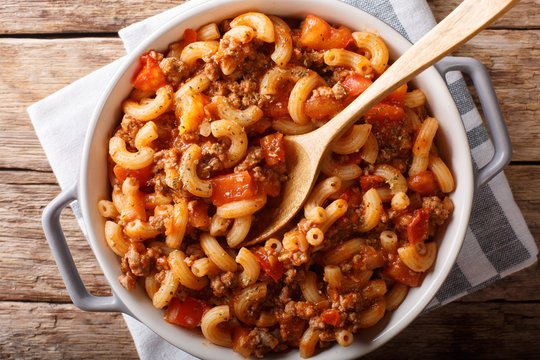

Goulash

Description
Goulash is a common meal eaten in Central Europe It is one of the national dishes of Hungary. Its traced back to the 10th centrury to stews eaten by Hungarian shepherds. Paprika was not part of earlier versions as the spice wasn't introduced to Europe until the 16th century.
Traditional goulash is made with larger chunks of beef and vegetables that cook low and slow together for hours. This dish is a simplified version but no less flavorful.
Ingredients
- 2 Tbsp extra virgin olive oil
- 1 medium yellow onion, chopped
- 2 cloves garlic, finely chopped
- 1 lb ground beef
- salt and pepper to taste
- 1 Tbsp tomato paste
- 1 15-oz can dice tomatoes
- 1 15-oz can tomato sauce
- 1 1/4 cup of beef broth
- 1 tsp Italian seasoning
- 1 tsp paprika
- 1 1/2 cup elbow macaroni
- shredded cheddar for finish
Instructions
- In a large skillet over medium heat, heat oil. Add onion and cook, stirring occasionally, until softened, about 7 minutes. Add garlic and cook, stirring, until fragrant, about 1 minute more.
- Add ground beef, season with salt and pepper, and cook, breaking up with a spoon, until no longer pink, about 6 minutes. Drain fat.
- Add tomato paste and stir to coat, then pour in diced tomatoes, tomato sauce, and broth. Add Italian seasoning and paprika, then stir in macaroni. Bring to a simmer and cook, stirring occasionally, until pasta is tender, 10-15 minutes.
- Stir in cheese until melted; season with salt and pepper, if needed. Remove from heat.
HOME